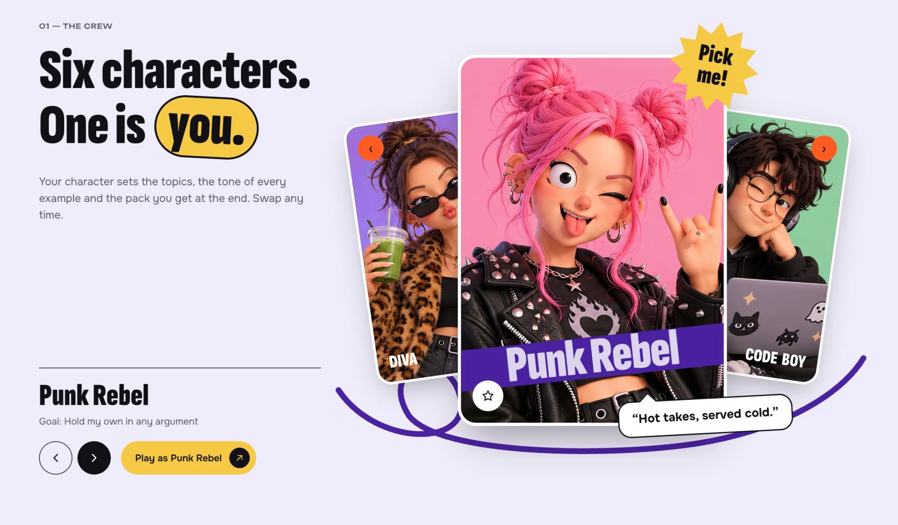
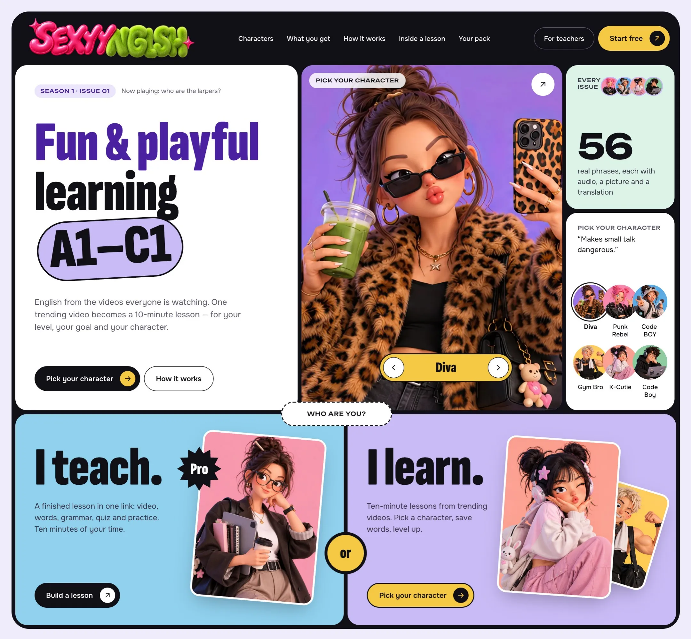
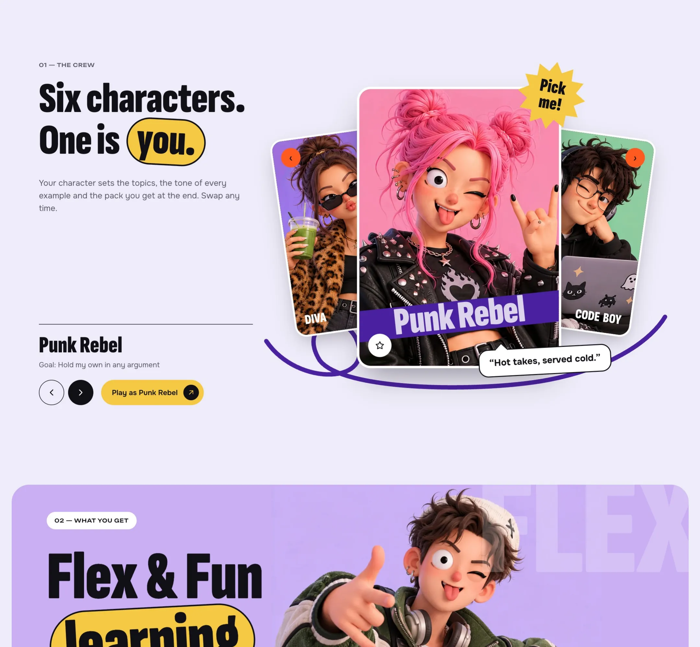
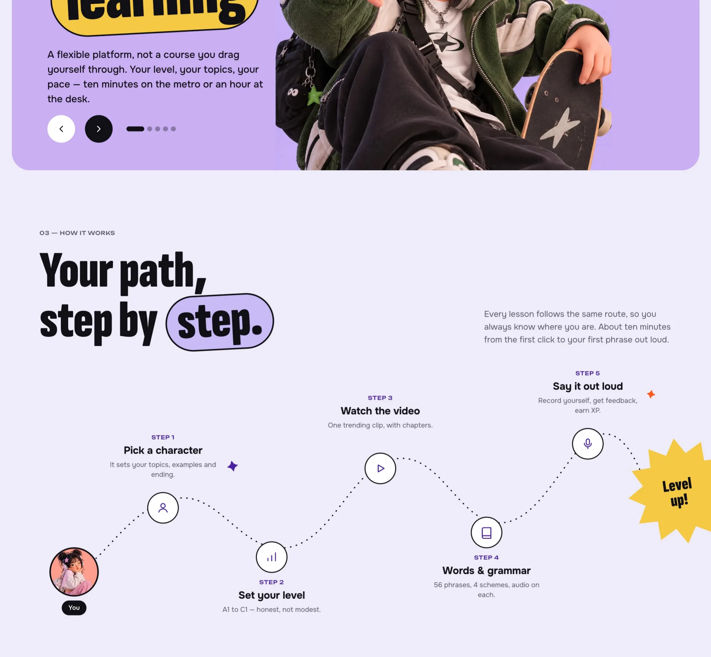
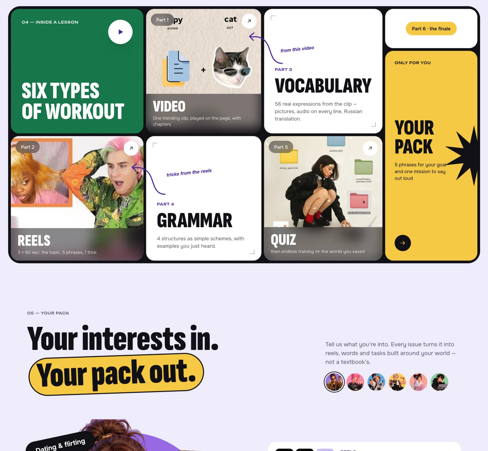
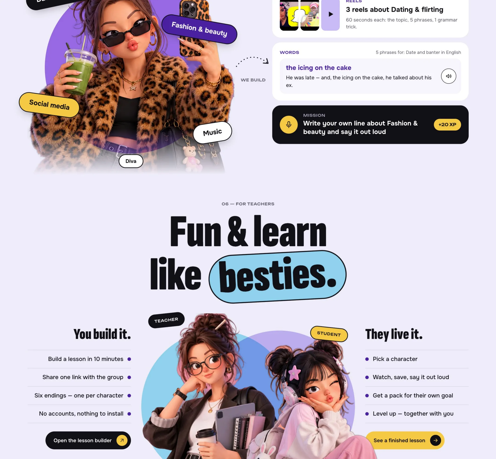
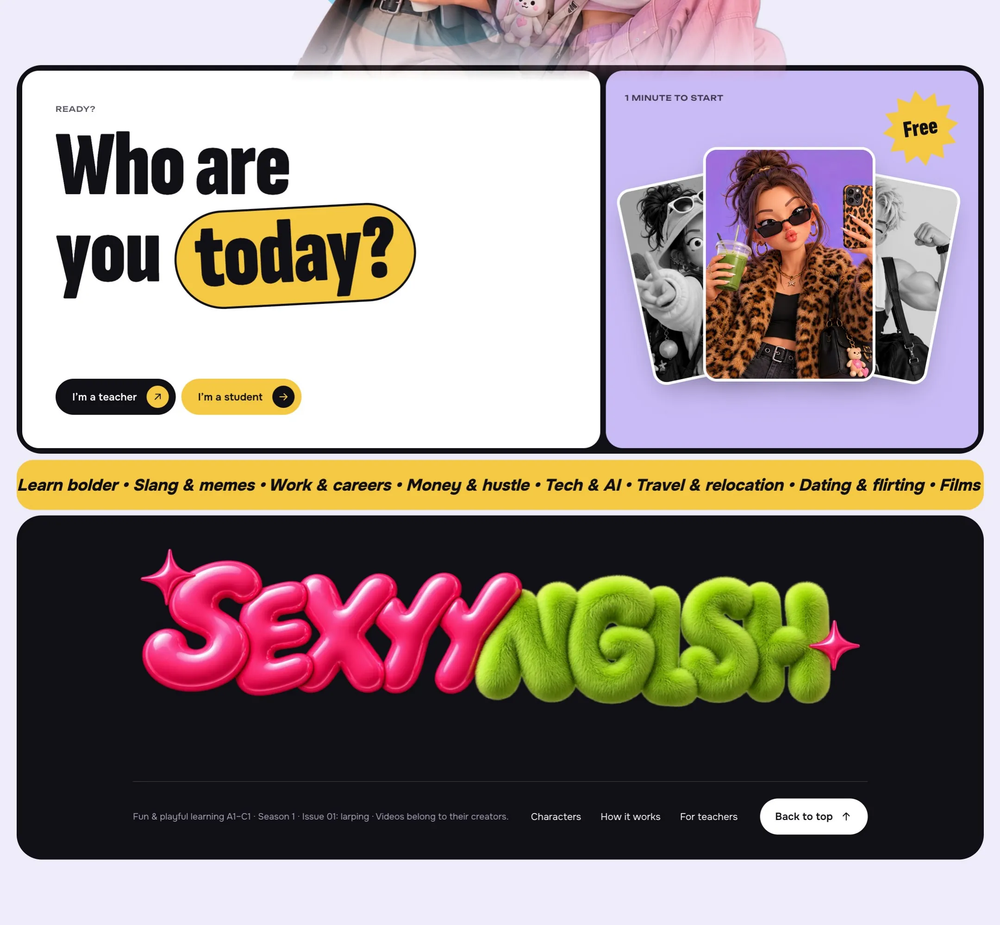

Платформа для изучения языков, где урок собирается из трендового ролика

Персональный проект: обучающая платформа для изучения иностранных языков. Одна система для двух ролей, преподавателя и ученика.
Современная методика с гибкой настройкой. Уровень от A1 до C1, свои цели, свои темы, свой темп. Десять минут в метро или час за столом, урок подстраивается под формат дня.
Учиться весело. Ученик выбирает персонажа, копит опыт, открывает уровни и забирает набор фраз под свои интересы. Преподаватель собирает готовый урок за десять минут и отправляет группе одну ссылку.
Один трендовый ролик превращается в десятиминутный урок.
Шесть персонажей. Персонаж задаёт темы, тон примеров и финальный набор фраз. Сменить можно в любой момент.
Путь в пять шагов. Персонаж, уровень, видео, слова и грамматика, живая речь вслух.
Шесть типов тренировок. Видео, рилсы, лексика, грамматика, квиз и персональный набор.
Режим преподавателя. Урок за десять минут, одна ссылка для группы, без регистрации и установки.





